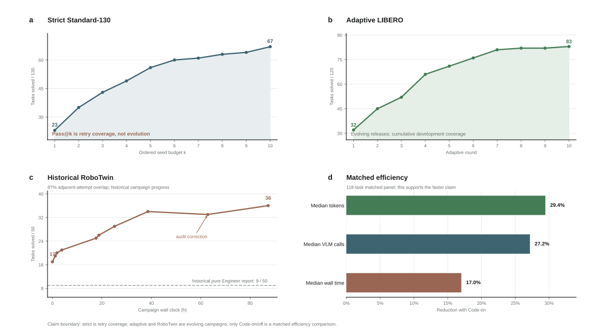

PUBLIC SIMULATOR RELEASE / 24 AUG 2026
roborsi: verified robot experience as inspectable code
A skill-first agent that composes visible robot tools, diagnoses execution traces, and retains code only after a native simulator verdict.
Abstract
roborsi separates visible reasoning from execution authority. A Planner proposes a strategy, an Engineer composes camera-grounded tools, and a Reviewer diagnoses the visible trace. Candidate code enters an isolated overlay and is retained only after a native simulator-success verdict. The result is a record of self-improvement that can be inspected as code, replayed as evidence, and measured in both task outcomes and inference cost.
LIBERO-Plus adaptive Pass@2398/840
Gain over fixed evaluation+16.3 pp
Adaptive development coverage95/120
Strict Standard-130 Pass@1067/130
FILM / 39 SECONDS
Nine tasks, one evolving skill system
The project film joins three evidence tracks without merging their protocols: nine named native-success episodes, measured adaptive solution discovery, and a matched Code-on/off comparison of outcomes and inference cost.
3 x 3 task film9 success videosNamed native simulator or predicate verdicts; qualitative evidence.
Self-evolution32 to 83/120Cross-release adaptive development coverage; not fixed-policy Pass@10.
Solidified code+7.5 pp / -29.4%Matched Code-on/off panels. Video illustrates code-backed execution.
All recorded rollouts
All thirteen published recordings are collected below. Play any clip in place or open Trace for its available ordered tool calls and terminal simulator verdict.
The three historical RoboTwin recordings retain final-verdict-only traces because their original per-call logs were not archived. No missing calls are inferred.
01
Execution architecture
Agent-visible evidence and simulator truth occupy different trust domains. The visible loop can inspect RGB-D observations, registered skills, and its own trace. It cannot inspect task predicates, rewards, hidden object poses, or success latches.
head + wrist RGB-D Compose
base + compound skills Act
IK + joint trajectories Adapt
reviewed code overlay
02
From robot traces to reusable skills
Each case below is attached to one named task, one exact seed, one ordered registered-tool trace, and a terminal simulator-success verdict. Selecting Trace opens the complete public call chain.
03
LIBERO-Plus adaptive evaluation
We evaluate 840 stratified perturbation identities across seven categories and three short suites. Fixed receives one attempt per identity. Adaptive releases retry selected fixed failures with reviewed code-backed changes. Success is counted only by the final simulator verdict.

Metered adaptive tokens1.474Ball valid adaptive attempts
Active wall time16.35hunion of active intervals
Valid adaptive attempts592infrastructure excluded
Unmetered VLM calls0Planner + Engineer + Reviewer
Release contribution
Newly solved identities are de-duplicated against fixed and every earlier adaptive stage.
Native-success perturbation cases
04
Evaluation across evidence tracks
Four protocols answer different questions and remain separate throughout the release.
What improves, and what does not
Pass@k is not an evolution curve. Strict Standard-130 rises from 23 to 67 tasks because each task receives more ordered seeds; cumulative coverage is monotonic by construction. Its per-round median tokens and wall time are non-monotonic, the residual task set changes, and releases change between rounds.

Strict Standard-130Coverage, not evolution23 to 67 with a growing seed budget
Adaptive releasesBetter task coverage32/120 to 83/120 across evolving rounds
Matched Code-on/offFaster execution-29.4% median tokens; -17.0% median wall time
RoboTwin solution discovery
The historical RoboTwin reports list a pure Engineer baseline alongside the Planner-Engineer-Reviewer framework. Task-level pass@k is 9/50 and 36/50 respectively, while strict per-episode success was 104/422 (24.6%). The campaign window was 87.26 h.
Pure Engineer9/50task coverage
Three roles36/50task-level pass@k
Strict episodes104/42224.6% success
Parallel overlap87%not sequential causality
Predicate-confirmed episodes
These three archived videos and their final simulator predicates are exact. Their original per-episode tool logs were not retained, so each dialog reports final-verdict-only provenance rather than inventing a call chain.
Adaptive development coverage
The measured ten-round sequence grows from 32 to 83 solved tasks while releases evolve between rounds. Later residual releases add 12 disjoint native successes, producing the locked 95-task cross-release headline.
- Sequential endpoint
- 83/120
- Metered tokens
- 2.342B
- Active wall time
- 11.09h
The 95/120 result is cumulative development coverage, not a fixed-policy or single-release Pass@10.
Strict Standard-130
All 130 tasks receive up to ten ordered seeds. No task checker, action-success latch, hidden pose, or policy checkpoint is visible to the Agent; 846 scheduled task-seed attempts have final simulator verdicts.
- Task failures
- 779
- Total tokens
- 2.882B
- VLM calls
- 43,076
Trend interpretation: the first five versus last five round medians show 13.6% fewer tokens, 3.1% fewer VLM calls, but 8.0% longer wall time. Because releases and residual tasks change, none of these descriptive shifts establishes that the model gets progressively faster.
Solidified code changes outcomes and cost
Code-on exposes the solidified visual_pick_place compound. Code-off keeps the model, base tools, release, tasks, seeds, and budget matched but removes that compound.
- McNemar exact
- p = 8.06e-5
- Task-cluster 95% CI
- +3.7 to +11.5 pp
- Task-level Pass@5
- 71/120 vs 58/120
Efficiency uses a separate 118-task matched seed-21 panel. It is not inferred from the 1,200-episode significance experiment.
ACT data flywheel closes one simulator loop
01Code-backed graspvisual source acquisition
→02ACT transport304 corrective steps
→03Code-backed placementnative final verdict
One matched seed-3 success on libero_spatial_swap/0; not held-out or generalization evidence.
05
Competitive context
Protocols differ; this is not a shared leaderboard. Policy checkpoints, views, success feedback, horizons, task catalogs, and retry semantics differ across systems. Reported scores stay attached to their source protocol.
| System | Evaluation | Reported result | Execution contract | Comparability |
|---|
Where roborsi is behind
What current evidence supports
Source-backed report: experiments and comparison